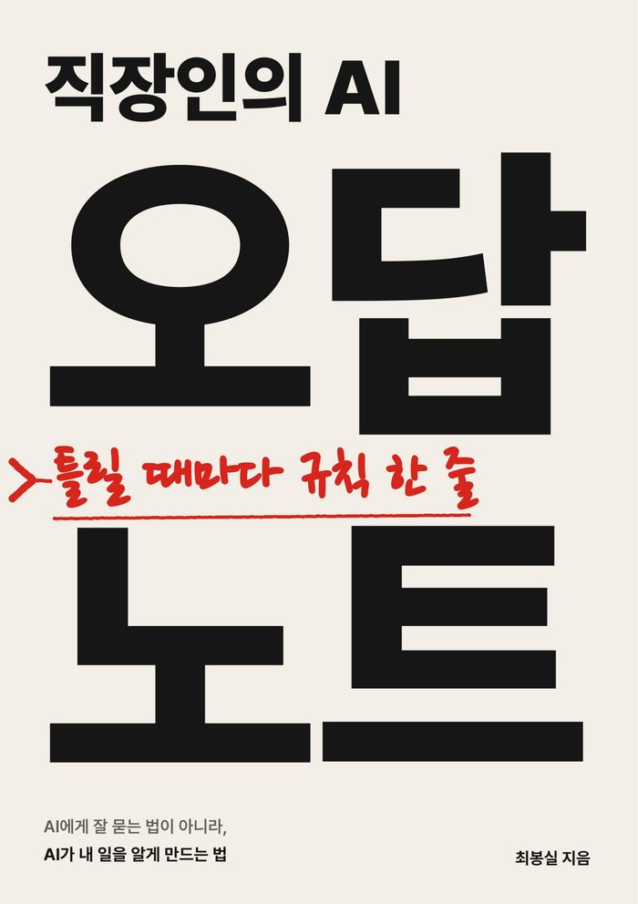

모델은 누구나 똑같이 씁니다. 결과를 가르는 건 AI가 읽을 내 기록과 규칙, 그러니까 AI가 일하는 현장입니다. 그 현장을 직접 만들고, 매일 기록하고, 책으로 묶고, 같이 만듭니다.
AI를 실무에 붙이면서 된 것과 안 된 것, 그리고 에너지 현장의 논문을 AI로 읽으며 확인한 것을 남깁니다. 원본은 네이버 블로그 '도면 읽는 AI', 이곳에도 같은 글이 쌓입니다.
AI에게 잘 묻는 법이 아니라, AI가 내 일을 알게 만드는 법

✓ FIELD-TESTED자신 있게 틀린 숫자를 내놓고, "완료했습니다"라고 말하지만 확인해 보면 비어 있는 AI. 그 틀린 자리마다 남긴 규칙을 모은 책입니다.
지난 1년 동안 코드를 직접 짜지 않고 AI에게 말로 시켜 업무 환경을 만들었습니다. 지침 파일, 흩어진 회사 파일, 500개가 넘는 지식 문서, 문서를 찾아 주는 검색, 역할을 나눈 여러 AI, 결과를 확인하는 습관까지. AI가 일할 현장을 처음부터 만드는 과정입니다.
도구 사용법은 검색하면 나옵니다. 어려운 건 내 업무에 맞게 현장을 까는 일이고, 그건 같이 해 봐야 빨리 됩니다.
지금 붙잡고 있는 업무 하나를 가져오시면, 그 자리에서 같이 만들고 그대로 넘겨드립니다.
도구를 나눠 주는 데서 멈추지 않도록, 업무 지식을 AI가 읽을 수 있게 남기는 방법과 순서를 실제 화면으로 보여드립니다.
노트와 책과 세션이 다루는 현장은 지금도 매일 쓰는 실물입니다. 아래 숫자는 그 현장의 지식 DB에서 매일 새벽 자동으로 집계됩니다.
매번 하던 설명을 파일로 적어 두고, AI가 일을 시작할 때마다 먼저 읽게 합니다.
여기저기 흩어진 문서를 AI가 찾아갈 수 있는 자리에 정리합니다.
한 번 알아낸 것은 문서로 남겨, 같은 질문을 두 번 하지 않게 합니다.
문서가 수백 개가 되면 AI가 필요한 것만 골라 읽도록 길을 냅니다.
한 AI에게 전부 맡기지 않고, 일의 종류마다 담당을 나눕니다.
"완료했습니다"를 믿지 않고, 결과를 다른 근거와 맞춰 봅니다.